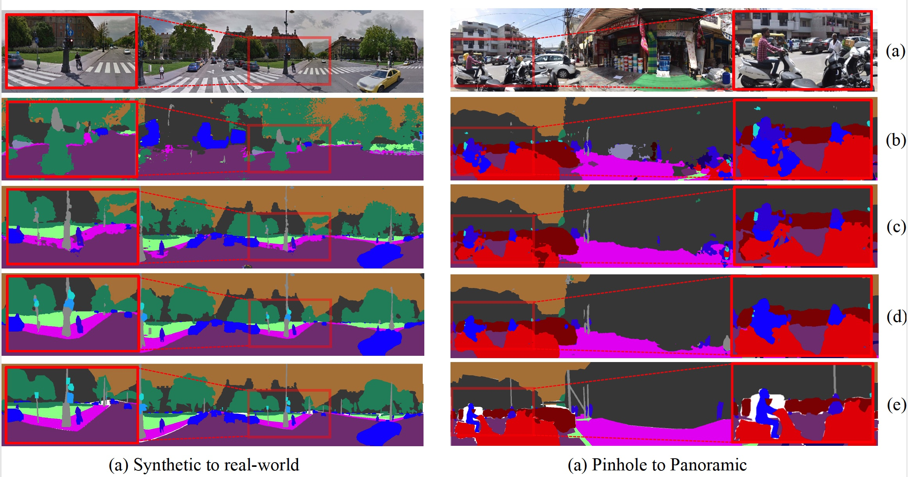

Look at the Neighbor: Distortion-aware Unsupervised Domain Adaptation for Panoramic Semantic Segmentation
-

Xu Zheng
AI Thrust, HKUST(GZ)
-
Tianbo Pan
AI Thrust, HKUST(GZ)
-
Yunhao Luo
Brown University
-

Addison Lin Wang
AI Thrust, HKUST(GZ)
Dept. of CSE, HKUST

Abstract
Endeavors have been recently made to transfer knowledge from the labeled pinhole image domain to the unlabeled panoramic image domain via Unsupervised Domain Adaptation (UDA). The aim is to tackle the domain gaps caused by the style disparities and distortion problem from the non-uniformly distributed pixels of equirectangular projection (ERP). Previous works typically focus on transferring knowledge based on geometric priors with specially designed multi-branch network architectures. As a result, considerable computational costs are induced, and meanwhile, their generalization abilities are profoundly hindered by the variation of distortion among pixels. In this paper, we find that the pixels' neighborhood regions of the ERP indeed introduce less distortion. Intuitively, we propose a novel UDA framework that can effectively address the distortion problems for panoramic semantic segmentation. In comparison, our method is simpler, easier to implement, and more computationally efficient.Specifically, we propose distortion-aware attention (DA) capturing the neighboring pixel distribution without using any geometric constraints. Moreover, we propose a class-wise feature aggregation (CFA) module to iteratively update the feature representations with a memory bank. As such, the feature similarity between two domains can be consistently optimized. Extensive experiments show that our method achieves new state-of-the-art performance while remarkably reducing 80% parameters.
Experimental Results
BibTeX
@inproceedings{Zheng2023DATR,
title={Look at the Neighbor: Distortion-aware Unsupervised Domain Adaptation for Panoramic Semantic Segmentati},
author={Xu Zheng, Tianbo Pan, Yunhao Luo, Lin Wang},
booktitle = {IEEE International Conference on Computer Vision (ICCV)},
year={2023}
}